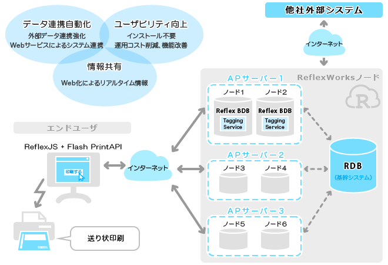
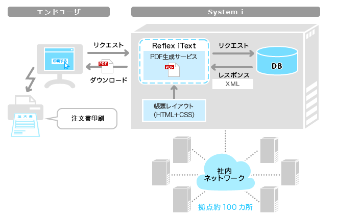
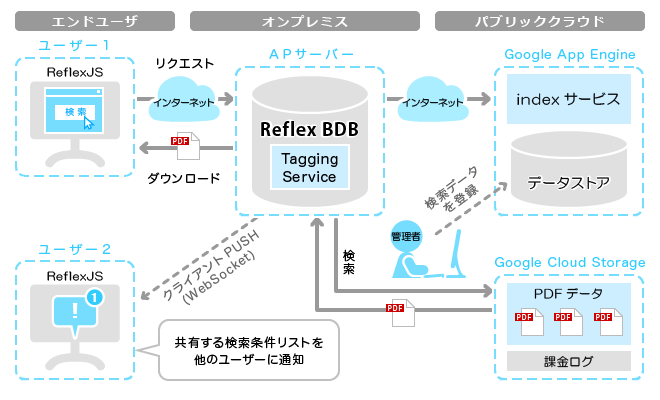

事例１：送り状印刷ソフトのWeb化（大手宅配事業）
業務における課題
- 利用者はインターネットユーザであり、様々なOS、ブラウザに対応する必要がある。
- 離れた担当者とのリアルタイムな情報共有がしたい。
- 他社システムと連携することで再入力なく簡単に送り状を印刷したい。
- スタート時は最小のリソースで開始したいが実際にどれくらいのアクセスが来るかわからない。また、将来的にユーザが増えた場合においても単純なリソース追加により対応したい。
- 数十万ユーザが同時に大量印刷する際に与えるシステムへの負荷が心配。
導入したシステム
- 複数のWebサーバ(静的コンテンツ)とReflexWorksノード(サービス)
- ReflexWorksは分散KVSであるためパフォーマンスに優れている。また、急激に利用者が増えても単純にノードを追加すれば対応可能であり、想定顧客数を最大に見積もらなくてもスモールスタートが可能。
- ReflexWorksノードと外部システムとのWebサービス連携
- ReflexWorksはXML(ATOM)やJSONに対応したREST APIを備えており、外部システムとのWebサービス連携が容易にできる。
- ブラウザにおける送り状印刷
- ReflexWorksはFlash PrintAPIにより送り状で必要なバーコード、QRコードなどをクライアント側で高速に印刷できるため、サーバ側への負荷は最小限で済む。
また、Active Xなどの特定ブラウザに依存する技術を使用していないため様々なOSやブラウザで動作する。

業務改善効果
- お客様はWebブラウザだけで送り状印刷処理が可能になり、送り状を手書きする必要がなくなった。また、リアルタイム情報共有や出荷データを使った顧客の管理にも使えるようになった。
- ECモールの出店店舗は送り状発行ソフトに入力し直す作業が必要なくなり、簡単に作成することができるようになった。また、商品を購入した利用者は商品の配送状況をより確実に確認できるようになった。
事例２：注文書発行システム（大手自動車ディーラ）
業務における課題
- クライアントアプリと同じような品質の帳票印刷を行えるWebアプリケーションを開発したい。ただしインストール作業はなくしたい。
- 注文書（PDF）を基幹データーベースからダイナミックに作成したい。
- レイアウトが変更されることが多いため、プログラム変更ではなく帳票テンプレートを修正することで対応したい。（帳票レイアウトとデータの分離）
導入したシステム
- 複数拠点(約百カ所)のSystem iサーバとReflex iTextサービス
- クライアントPCからのリクエストにより各拠点サーバのDBからデータを検索し動的に注文書PDFを生成する。データのパターンに応じて数十種類の帳票レイアウト（HTML+CSS)が使用される。プログラムと帳票レイアウトは完全に分離しており、レイアウト変更の際はプログラム修正は必要ない。
- 拠点のPCとブラウザ
- Acrobat Readerを起動できるブラウザで表示。OSやブラウザのバージョンには依存しない。

業務改善効果
- クライアントに専用ソフトを必要としていた帳票印刷をブラウザを用いて印刷できるようになった。
- レイアウト変更に伴う修正作業のコスト削減。
事例３：PDF情報検索サービス （情報管理サービス）
業務における課題
- 全体で数TBという膨大なPDF文書を検索するシステムを作りたい。
- サーバやストレージ維持費用などのコストを極力抑えたい。
- パブリッククラウドを利用したいが通信費は押さえたいため、パブリッククラウドとオンプレミスの統合になる。その場合、認証・認可の仕組みをどうするか。
- 複数人が作業するため検索条件リストなどの情報はリアルタイムで共有したい。
導入したシステム
- Google App Engine
- Google App EngineのデータストアにIndex情報を格納して検索サービスを構築する。
- Google Cloud Storage
- Google Cloud StorageにPDF文書を格納する。また、ACL機能や課金ログ（アクセスログ）も利用する。
- 専用APサーバにReflexWorksノードを配置
- 検索条件リストを受付てIndex情報を検索する。検索結果はキャッシュする。
複数ユーザによる検索条件リストの共有はTagging ServiceのACL機能とクライアントプッシュ機能(WebSocket)により実現。

業務改善効果
- ストレージ費用の安いパブリッククラウドの利用によりコスト削減。
- 高くなりがちな通信費をオンプレミスのサーバキャッシュにより軽減。
- 複数人のリアルタイムな作業を実現。